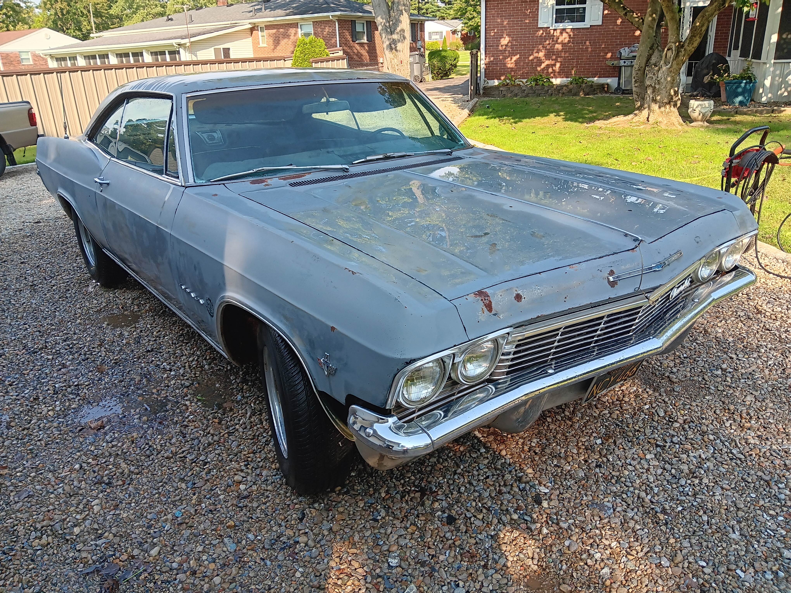
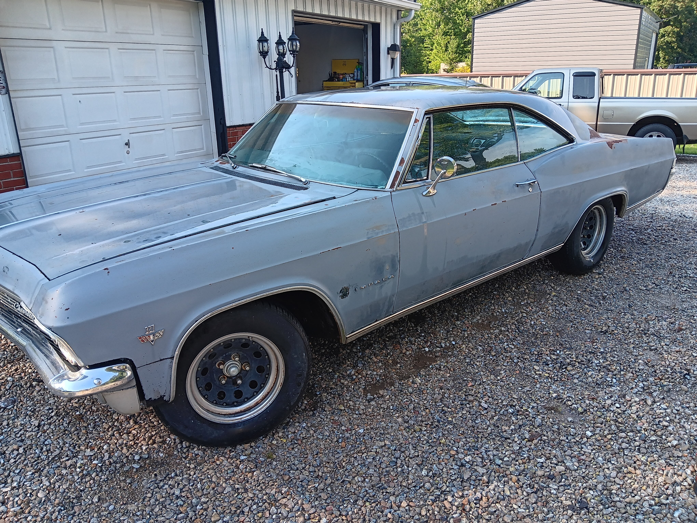
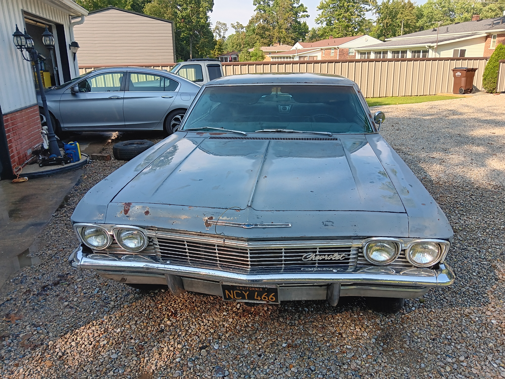
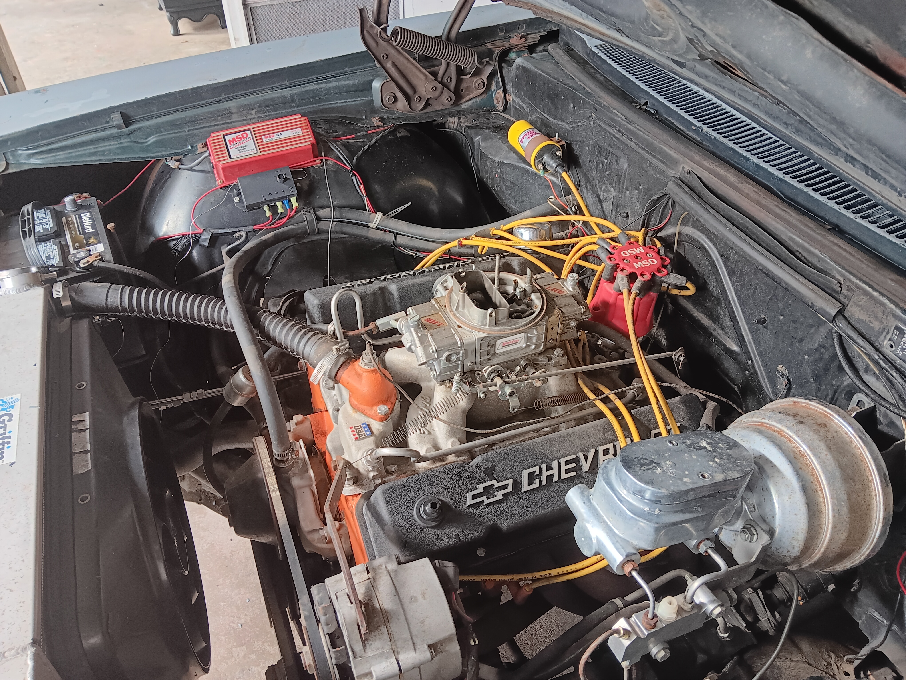
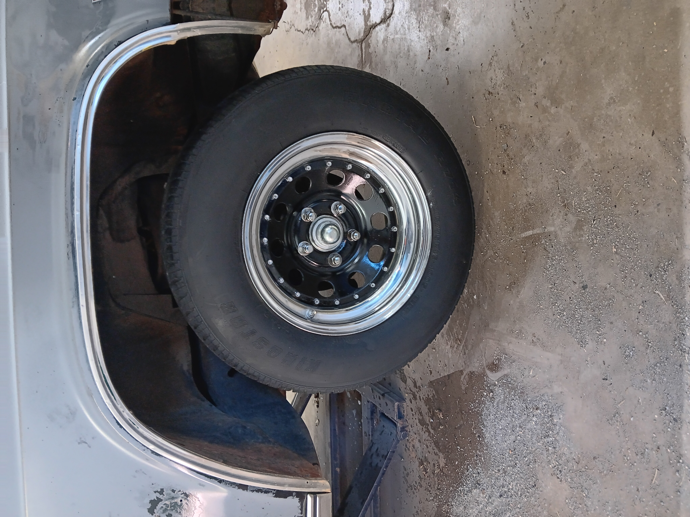
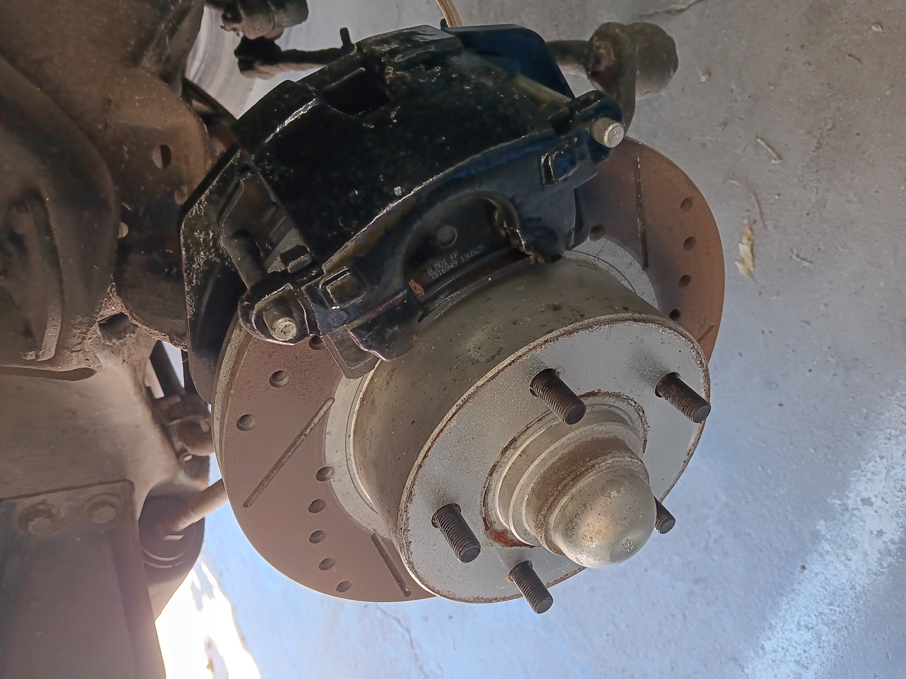
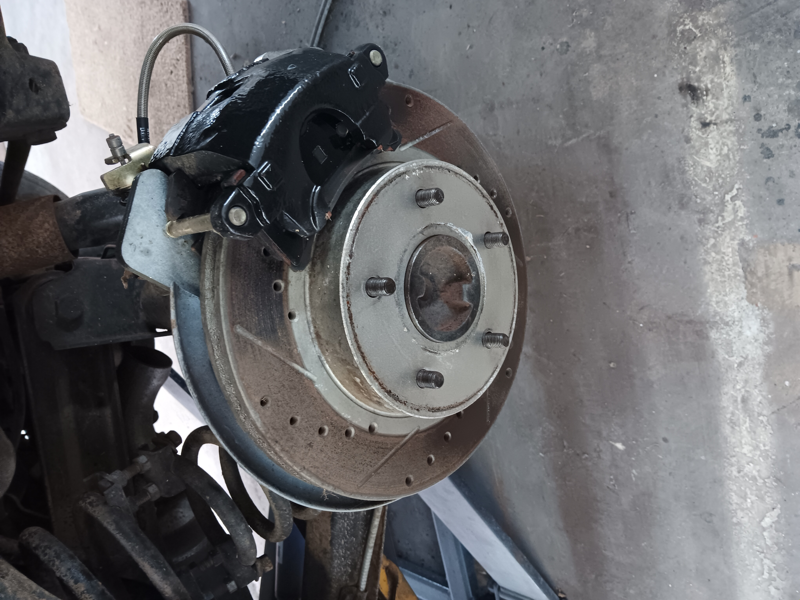
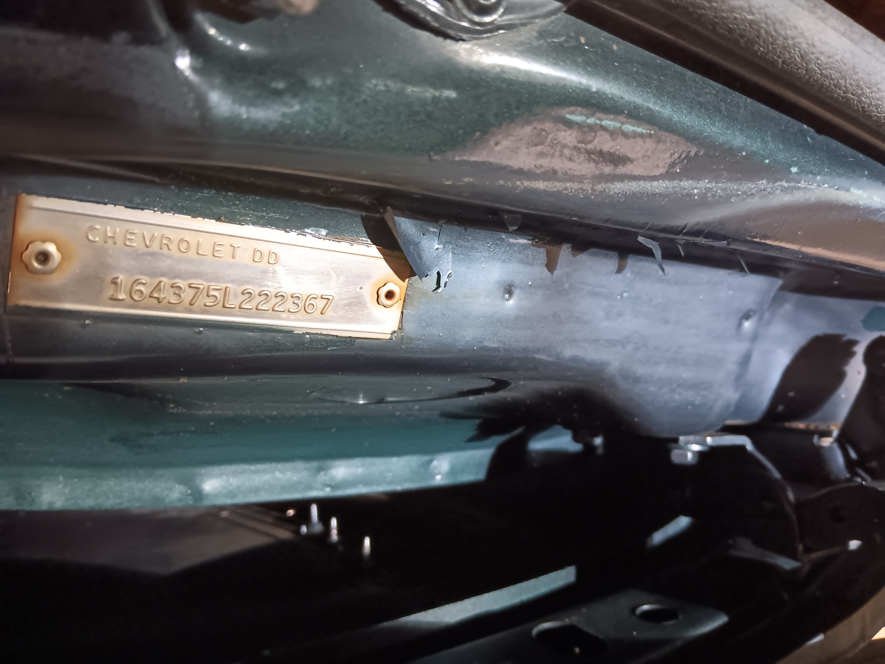
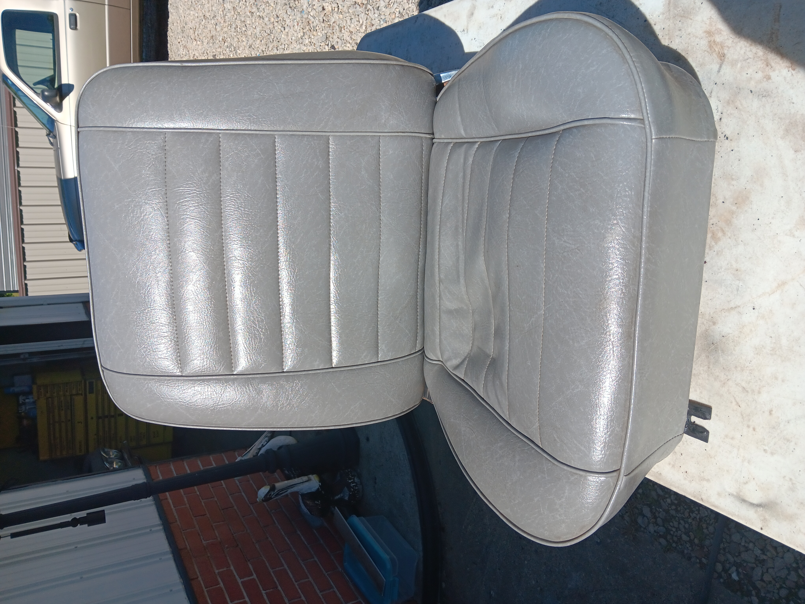
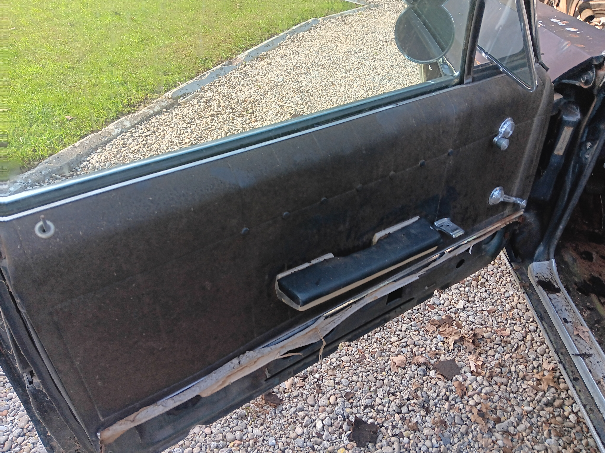

A classic full-size Chevrolet with a strong hot-rod foundation and plenty of room for the next owner to finish it their way.
Engine: 350 small-block Chevrolet V8, bored .030 over
Fuel & Ignition: Holley double-pumper carburetor and MSD electronic ignition
Transmission / Shifter: Aftermarket B&M shifter
Brakes: Upgraded 4-wheel disc brakes with drilled/slotted rotors
Cooling: 4-core radiator
Additional Mechanical Work: Newer brake, fuel and transmission lines, newer exhaust and tires









This Impala is being offered as a running project car. It has a 350 small-block bored .030 over, aftermarket B&M shifter, upgraded 4-wheel disc brakes, newer exhaust and tires, and a number of mechanical upgrades already in place.
The car needs a complete interior restoration. The front bucket seats shown are usable but are not original to the car. Body and paint also remain a project for the next owner.